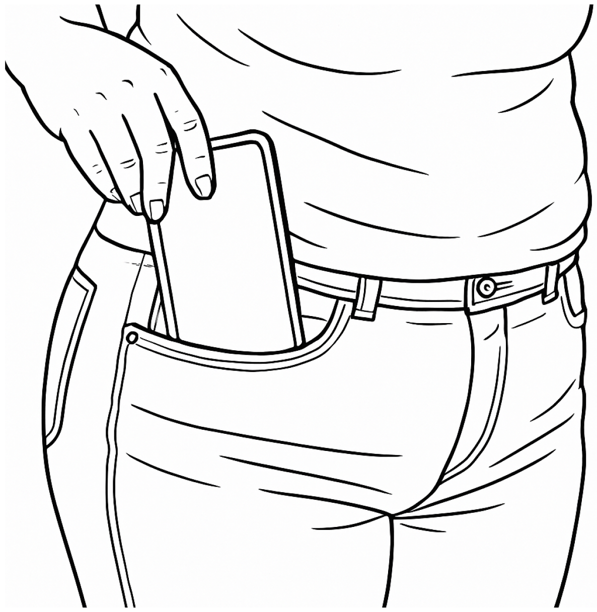
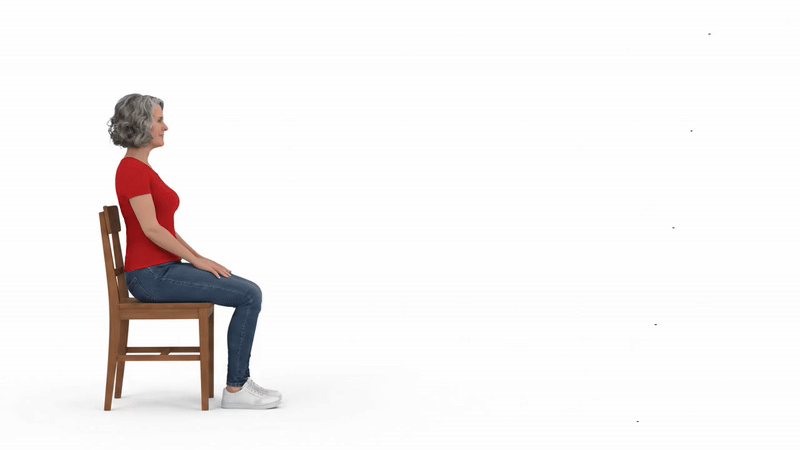

לפני שנתחיל בפעילות, האם ביכולתך כרגע לקום מהכיסא ולצעוד למרחק קצר ובחזרה בצורה בטוחה?
הפסיקו מיד אם אתם חשים חוסר יציבות או סחרחורת.

3. כעת קומו, לכו 3 מטרים, הסתובבו במקום, חיזרו אל הכיסא והתיישבו. 4. הוציאו את הטלפון מהכיס ולחצו לחיצה ארוכה על “סיום״.

הניחו את הטלפון בכיס הקדמי, התיישבו בנחת ואז קומו וצעדו בהתאם להנחיות.
זמן כולל: